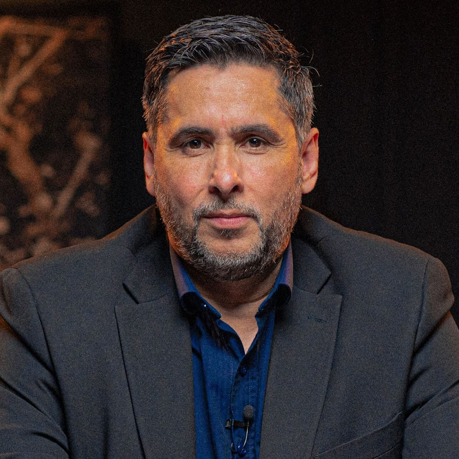
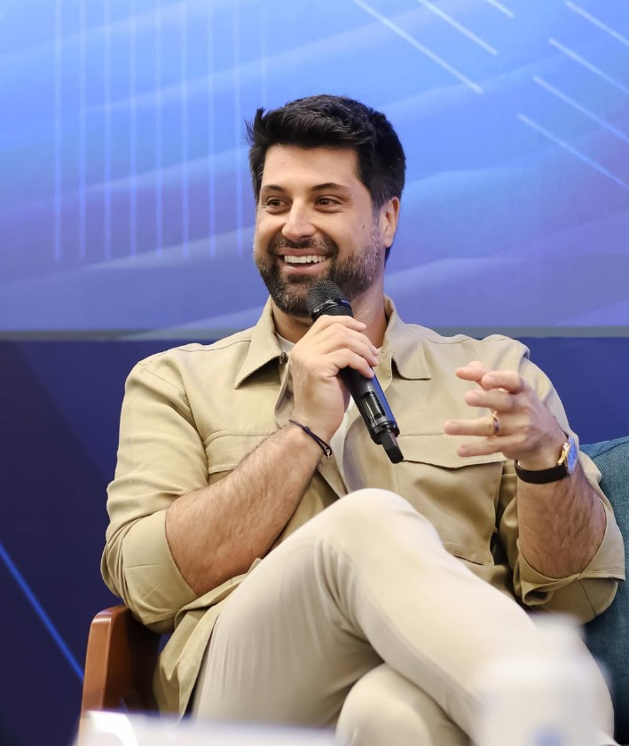

Método Demanda Infinita®
Cérebro Conselheiro
Uma skill de IA com o jeito de pensar de 3 mentores de negócio dentro dela — Flávio Augusto, Tallis Gomes e Alfredo Soares. Baixe e use nas suas próprias decisões.
Toda decisão que você toma sozinho tem um ponto cego — porque é sempre olhada pela sua lógica, com o seu viés, no dia em que você está. Peguei 3 jeitos de pensar que admiro e estudo como empresário, e coloquei os 3 dentro de um único "cérebro" de IA. Nenhum dos 3 sabe que essa reunião existe — mas os princípios que eles ensinam publicamente, sim.
Flávio Augusto
Wise Up · Orlando City
Liberdade e escala replicável — décadas, não trimestre.
Tallis Gomes
Easy Taxi · Singu · G4 Educação
Execução e venda — feito é melhor que perfeito.
Alfredo Soares
VTEX · Loja Integrada · G4 Educação
Vendas, marca e execução — vendas, vendas e vendas.
Download grátis
Baixe o Cérebro Conselheiro
Arquivo .skill pronto pra instalar no Claude Code. Depois de instalado, é só descrever a decisão que você precisa tomar — os 3 mentores respondem.
Arquivo .zip renomeado — funciona em Mac, Windows e Linux
1
Descompacte o arquivo baixadovai virar uma pasta chamada
conselho-3-mentores2
Copie a pasta pra dentro de
~/.claude/skills/se a pasta skills não existir ainda no seu computador, é porque você ainda não tem o Claude Code instalado — veja o requisito abaixo3
Abra o Claude Code e descreva sua decisãoex: "preciso decidir se contrato mais um vendedor agora ou espero bater a meta" — a skill entra sozinha
Pré-requisito: Claude Code, o app de linha de comando gratuito da Anthropic (
claude.ai/code). Se você não usa IA pra trabalhar no seu negócio ainda, essa já é uma boa desculpa pra começar.As 3 lentes, por dentro

Lente 1
Flávio Augusto
Fundador da Wise Up, ex-dono do Orlando City SC. Autor da trilogia "Geração de Valor" e de "Ponto de Inflexão".
FiltroIsso me deixa mais livre ou mais preso? Isso escala sem depender de mim pra sempre?
- Isso aumenta seu fluxo de caixa ou só o seu ego?
- Se você tivesse que repetir isso 100 vezes sem estar presente, ainda funcionaria?
- Você está construindo um ativo ou só um emprego mais bem pago pra você mesmo?
- Qual o custo disso na sua liberdade daqui 5 anos?
Baseado em princípios públicos de "Ponto de Inflexão" e na trajetória de fluxo de caixa/franquia da Wise Up — paráfrase, não citação literal.
Lente 2
Tallis Gomes
Fundador da Easy Taxi e da Singu, cofundador do G4 Educação. Autor de "Nada Easy — O Passo a Passo para Levar Minha Empresa a 35 Países".
FiltroIsso vende mais rápido? Isso trava decisão ou destrava execução?
- Você já vendeu isso ou só validou no papel?
- Quanto tempo você perdeu deixando isso "perfeito" em vez de colocar na rua?
- Se não está vendendo, o problema é o produto ou é você não estar executando o suficiente?
- Quem nessa equipe você contrataria de novo hoje — e quem já devia ter saído?
Baseado em falas públicas dele sobre execução, disciplina e contratação — paráfrase, não citação literal.

Lente 3
Alfredo Soares
Fundou a Xtech Commerce, vendida pra VTEX em 2017 — hoje sócio e VP institucional da VTEX e presidente da Loja Integrada. Cofundador do G4 Educação. Autor de "Bora Vender", "Bora Varejo" e "Todos Somos uma Marca".
FiltroIsso aumenta atividade comercial de verdade ou é distração disfarçada de estratégia?
- Isso é processo de venda ou só uma transação isolada que você tá tentando fechar?
- Você já testou isso no mercado essa semana, ou ainda tá esperando ficar pronto?
- Isso aparece no seu funil de forma mensurável, por canal, ou é só sensação de que vai ajudar?
- Você tá construindo marca (ser lembrado) ou só empurrando estoque?
Baseado nos livros "Bora Vender" e "Bora Varejo" — paráfrase, não citação literal.
Quer captar clientes qualificados sem investir 1 real de tráfego pago? Conheça a Demanda Infinita.

Fala direto comigo
Quer saber como eu posso te ajudar a vender mais usando IA?
20 minutos, sem compromisso, pra ver se faz sentido pro seu negócio.
📅 Marcar meu bate-papo agora